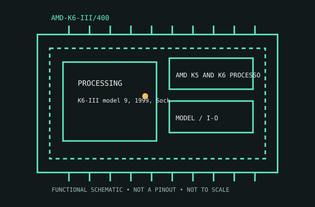

[ AMD K5 AND K6 PROCESSORS // IDENTIFIED CPU ]
AMD-K6-III/400
K6-III model 9, 1999, Socket 7. 400 MHz; 100 MHz bus; 64 KB split L1; 256 KB on-die L2; 2.4 V nominal.

MODEL IDENTIFICATION: AMD-K6-III/400. Match full model suffix, stepping and package to the physical item and cited documentation.
Recorded specifications
| Cataloged model | AMD-K6-III/400 |
|---|---|
| Era / family | K6-III model 9, 1999, Socket 7. |
| Model specifications | 400 MHz; 100 MHz bus; 64 KB split L1; 256 KB on-die L2; 2.4 V nominal. |
| Compatibility | Board supports K6-III voltage, bus and BIOS; external L2 can serve as L3. |
| Variants / limits | K6-III+ is mobile-derived and distinct. |
Compatibility and variants
- Board supports K6-III voltage, bus and BIOS; external L2 can serve as L3.
- K6-III+ is mobile-derived and distinct.
- Check system-vendor CPU support, board revision, firmware minimum, package, memory, cooling and power before installation; similar socket naming does not prove compatibility.
Service and archival notes
Record stepping, voltage, cache config and BIOS.
Archive the complete marking/OPN/sSpec, stepping, physical condition, tested host revision, firmware, memory population, cooling, and test conditions. Distinguish published limits from measurements.
Sources & further reading
- Model identification/specification search — AMD-K6-III/400Model-level part identification and specification cross-reference.
- AMD technical archive — AMD-K6-III/400 product familyAMD-authored processor data books and family specifications.
- AMD product-history reference — AMD-K6-III/400Manufacturer history reference for product-family context.
Use the matching manufacturer data sheet revision and platform vendor’s CPU list for final fit decisions.